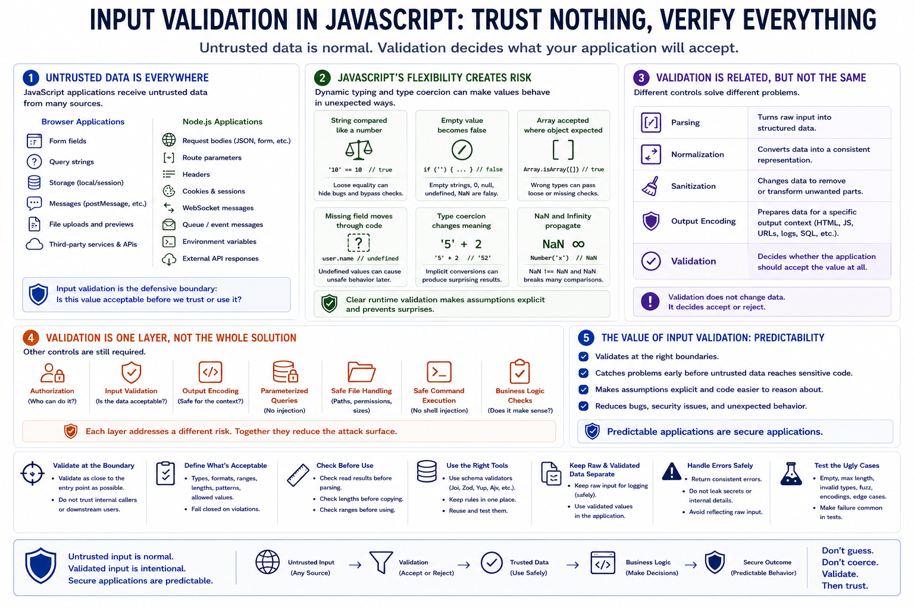

Why Input Validation Matters in JavaScript
Connecting to LMS... Progress: in progress

Narration
JavaScript applications process untrusted data constantly. A browser application receives form fields, query strings, storage values, messages, files, and data from third-party services. A Node.js service receives request bodies, route parameters, headers, cookies, WebSocket messages, environment variables, queue events, and API responses. Input validation is the defensive boundary that asks whether a value is acceptable before the application trusts it or uses it to make decisions.
JavaScript's flexibility is productive, but it also creates validation risk. Dynamic typing and type coercion can make values behave in unexpected ways if checks are loose or ambiguous. A string may be compared like a number, an empty value may become false, an array may be accepted where an object was expected, and a missing field may move through code until it causes unsafe behavior. Clear runtime validation makes those assumptions explicit.
Validation is related to other controls, but it is not the same thing. Parsing turns raw input into structured data. Normalization converts data into a consistent representation. Sanitization changes data, often to remove or transform unwanted parts. Output encoding prepares data for a specific output context such as HTML, JavaScript, URLs, logs, or SQL parameters. Validation decides whether the application should accept the value at all.
Input validation is one layer of a secure design. It does not replace authorization, output encoding, parameterized queries, safe file handling, safe command execution, or business logic checks. Its value is predictability. When JavaScript applications validate inputs at the right boundaries, they reduce surprises before untrusted data reaches sensitive code.